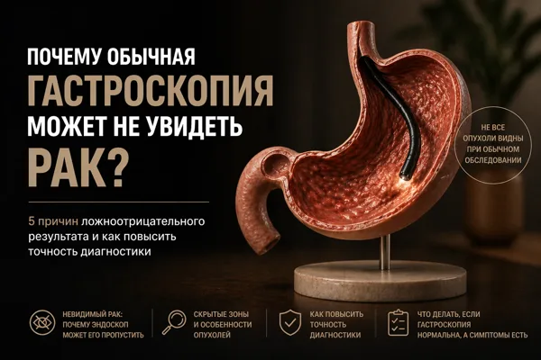
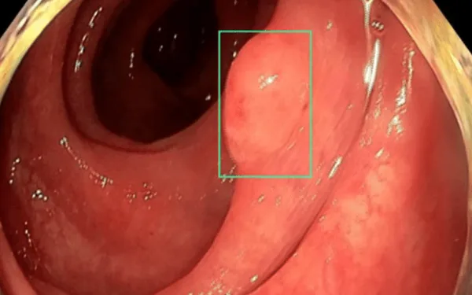
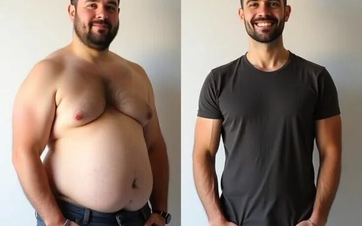
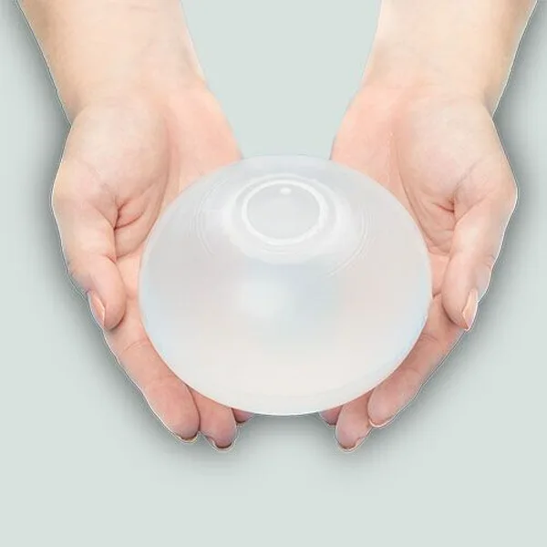
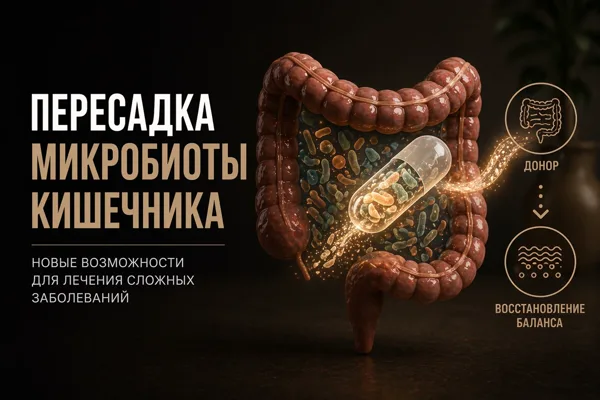

Статьи
Разбираю вопросы ЖКТ, эндоскопии и снижения веса простым языком.
 Подробнее читайте в моём канале Дзен →
Подробнее читайте в моём канале Дзен →

Эндоскопия
Почему обычная гастроскопия может не увидеть рак?
Читать →
ИИ в медицине
Вы доверите нейросети искать рак в кишечнике?
Читать →
Снижение веса
Поставил баллон, сбросил 20 кг — а вес вернулся. Почему?
Читать →
Снижение веса
Баллон удалили, а вес вернулся: 4 причины
Читать →
СРК
Вздутие, боль, неустойчивый стул: что делать при СРК
Читать →
Пробиотики
Почему пробиотик не работает: дело в штамме
Читать →
Гастрит
Гастрит не проходит: в чём ошибка
Читать →
Вздутие
Вздутие не проходит: почему лечение не работает
Читать →
Снижение веса
Как сбросить 20–30% веса за 6 месяцев без скальпеля?
Читать →
Снижение веса
Баллон не волшебная таблетка: что реально работает
Читать →
ЖКТ
Вы меняете диеты, а кишечник всё равно не лучше. Почему?
Читать →
Снижение веса
Диеты не работают? Вы не виноваты
Читать →
Печень
У тебя уже жирная печень — и ты об этом не знаешь
Читать →
Микробиота
Три способа пересадить микробиоту
Читать →
Микробиота
ФМТ при СРК и ожирении: где работает, а где нет
Читать →
Микробиота